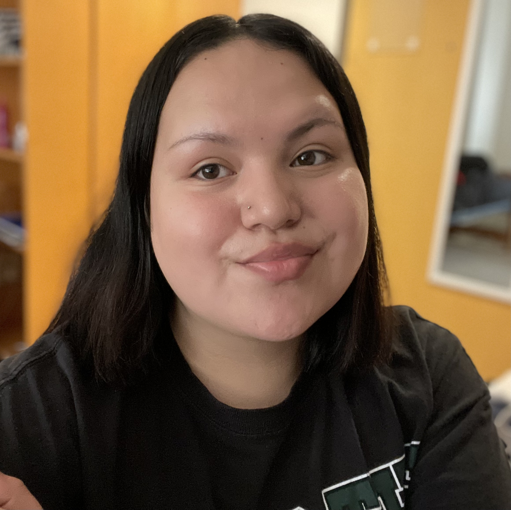

Zach Nichols
Name: Zach Nichols
Student, Junior
Major: Computer Science
Hometown: Grand Rapids, MN
Bio: Zach graduated high school in 2021 and went to BSU as it was an affordable and good value option.
After he finishes his degree he is still undecided, but he likes full stack development and web development.
Joshua S

Name: Joshua S
Student, Senior
Major: Geospatial Major / GIS Minor
HomeTown: MCcordsville, IN
Degrees:
AS in WAPM/Forestry Tech
AS in Geospacial
Bio: Joshua S graduated high school in 2017 and took a gap to peruse a part time career as a
climbing instructor. Afterwards he joined Vermilion community collage to get a forestry
applied science degree. While taking classes he discovered a passion for Geospatial stats and transferred to Bemidji to
finish a bachelors of science in GIS.
Ian Jungels

Name: Ian Jungels
Student, Senior
Major: Wildlife Biology Major / GIS Minor
HomeTown: Monticello, MN
Bio: Ian graduated high school in 2019 and came to Bemidji State as a member of the Beavers baseball team.
That was short lived however as it wasn't what he was hoping for. He interned at Lewis and Clarke State the summer of 2022 and is currently sending out applications.
Ethan Henrickson
Name: Ethan Henrickson
Student, Sophmore
Major: CS Major
HomeTown: Bemidji, MN
Bio: Ethan graduated high school in 2021 and went to Bemidji State University because it was close to home.
After school he plans on going to a grad school to achieve a masters in CS and get a job as a full-stack developer.
Jessilyn Spears

Name: Jessilyn Spears
Student: Junior
Major: Mass Communication
Hometown: Red Lake, MN
Bio: Jessilyn graduated high school in 2018, went to college and graduated in 2020 with her associates's degree.
She took a year off and decided to go to BSU since it was close to home.
She was first majoring in Computer Science but now changed her major to Mass Comm in Spring 2022.
Tyler Busta
Class: Senior
Major: Computer Science
Hometown: Anoka, Minnesota
Bio: Tyler graduated high school in 2019, where he then attended
Anoka Ramsey Community College for two years to ear his general credits
before transferring to BSU in the fall of 2021. After his degree he will persure
software development or web development.